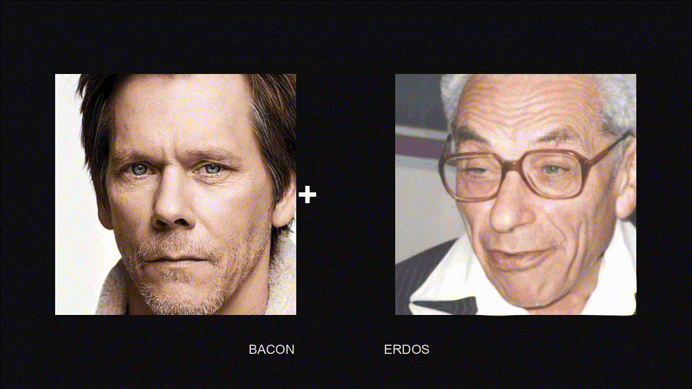

SIGBOVIK 2026 ✕ IETF 126 Vienna PechaKucha
Source-relative centrality in heterogeneous affiliation graphs
T. E. Vaughan // T. H. Underpoot // Z. Flugelhorn
July 2026
Your distance to a distinguished node in the coauthorship graph, compressed into a single beloved integer.
Same construction, basically, but on the film coappearance graph instead of coauthorship.
It's "six degrees of separation" but only like ½ a degree of imagination
All structural information collapses to a single value. Every other path you have is ignored, which is pretty wack.
A handshake, a decade of collaboration, and a shared lift: identical edges and that's totally wack.
A source-relative centrality measure on heterogeneous graphs with typed edges and path-quality semantics.
Named after Steve Buscemi, but he has not been informed.

G = (V, E, τ)
Fig. 1: assorted cardinals, for reference.
How far this kind of edge carries you, whether measured in distance, effort, or awkwardness etc.
How much "evidential strength" the interaction actually carries.
One weak link drags the whole chain down.
Long paths pay for every hop they take.
A(u, v) = max Q(P) over simple paths u ⇝ v
Simple paths only. “In principle one could traverse a cycle indefinitely. We have chosen not to.”
Everyone within weighted radius r of the source:
Nᵣ(s) = { u : dᵤ(u, s) ≤ r }
Each member gets a weight α(u; s), proportional to its accessibility to the source. That is how strongly it belongs to the inner circle.
A measure named Buscemi centrality admits only one sensible choice of source node.
s ≔ Buscemi
QED, n'est-ce pas?
It follows that all of graph theory is, at some level, secretly about Steve Buscemi.
Some may argue that this is a non-sequitur, or non-constructive etc, but the authors maintain that it is axiomatic.
Best path
direct coappearance
Q(P)
0.9 ⁄ (1 + 1) = 0.45
Embeddedness
0.41 across Nᵣ
BC(Goodman) = 0.43
Aside from The Big Lebowski and Monsters Inc, Goodman and Buscemi also share Barton Fink, which arguably qualifies him for the repeated_coappearance upgrade, but the authors decline to recompute, so there.
Repeated coappearance is stronger evidence: Billy Madison, Mr. Deeds, and more, so it earns a dedicated edge type.
q(repeated_coappearance) = 0.95
N.B.: This result is not considered a deficiency of the measure. He's made some pretty good movies honestly.
| Node | Best path type | A(v) | BC(v) |
|---|---|---|---|
| Steve Buscemi | (source) | 1.000 | 1.000 |
| Adam Sandler | direct, repeated | 0.475 | 0.49 |
| John Goodman | direct | 0.450 | 0.43 |
| Kevin Bacon | direct (Sleepers, 1996) | 0.450 | 0.42 |
| Harvey Keitel | direct | 0.450 | 0.41 |
| Paul Erdős | not established | 0.000 | 0.000 |
You can calculate these for yourself if you don't believe me, and I won't mind. Paul Erdős has no path to Steve Buscemi, as far as I know.
Buscemi Centrality Explorer, running on the IETF co-authorship graph.
Want to know your ekr centrality? Thomson centrality, or Nottingham centrality?
The full RFC and Internet-Draft author graph, pulled from the Datatracker API.
Pin any author who has ever written an I-D as the source node.
Quality, cost, radius and λ, adjustable in the browser. For science.
the Explorer
Rankings are final, binding, and unappealable, until someone commits a new Internet-Draft, which happens on the order of hourly.
The measure is undefined for graphs containing no Steve Buscemi.
Extension to directed graphs is left as an exercise.
The authors have not computed their own Buscemi centrality, but assume it is non-zero.
Steve Buscemi was not consulted during the preparation of this work and is under no obligation to acknowledge its existence.